For the computer-controlled assignement we build a Great Invention Kit (GIK)
GIK's principles are 1. Scalability, 2. Material diversity and 3. Reversibilit. You can learn more about on this CBA presetation.
The project goal was to create a simple GIK module that allows me to build structures that could grow on complex and divers shapes although the module original simplicity. Another goal was to keep the module simple so I can easily turned on to a parametric design after the first tests will be done.
The first design was done in Rhino and laser-cut on 1.5 mm cardboard.
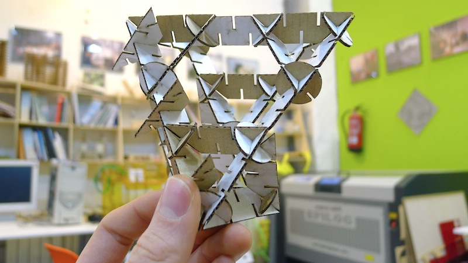Parametric Design
The design was later brought to OpenSCAD so it could be fully parametric. OpenSCAD is an script based software that describes the object and renders the 3D model from a script file. This gives you full control over the modelling process and enables you to easily change any step in the modelling process or to produce designs that are defined by configurable parameters.
GIK_node(module_size, material_height);
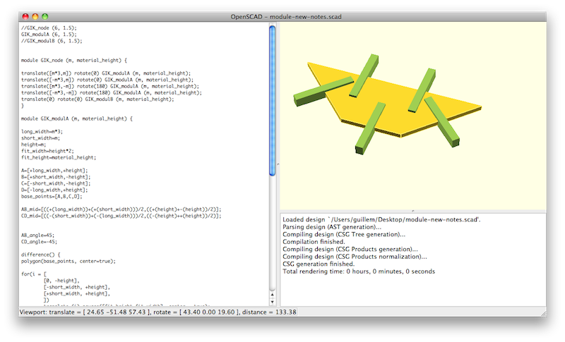
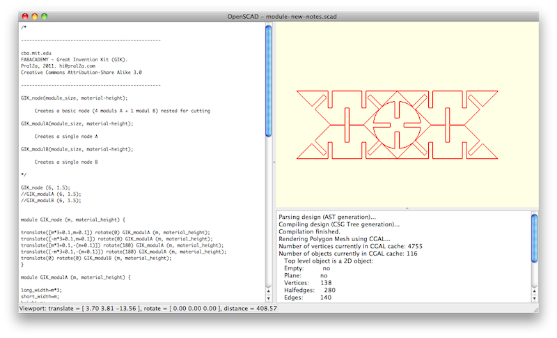
Process
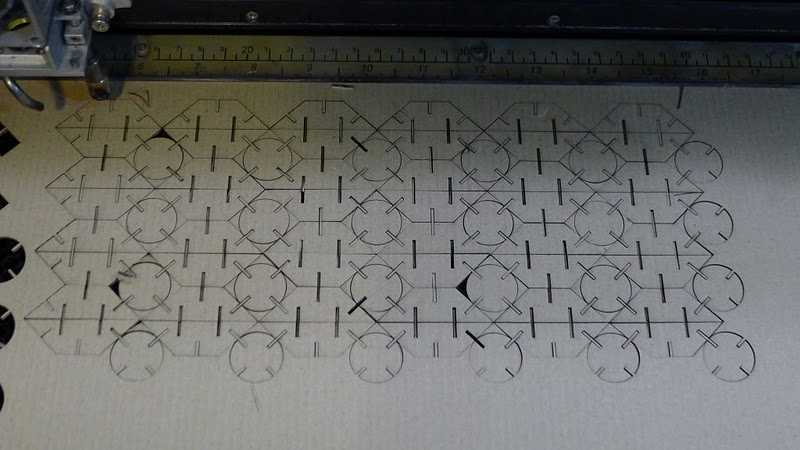 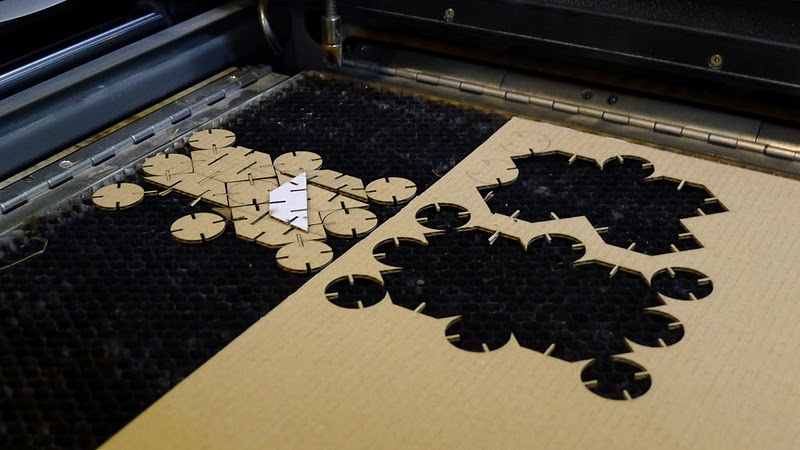 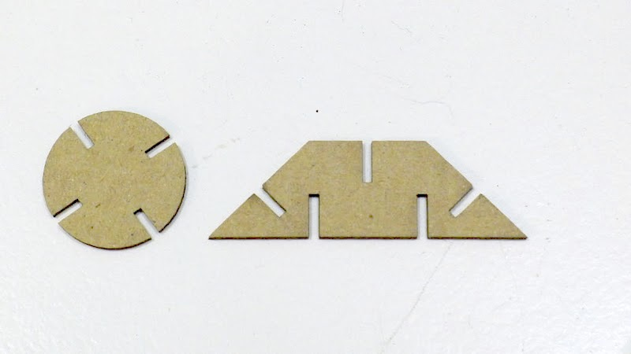 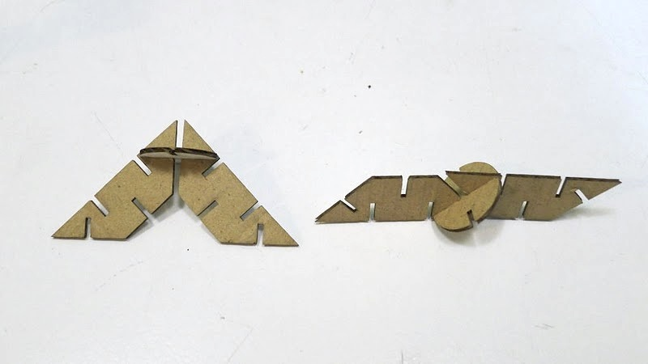 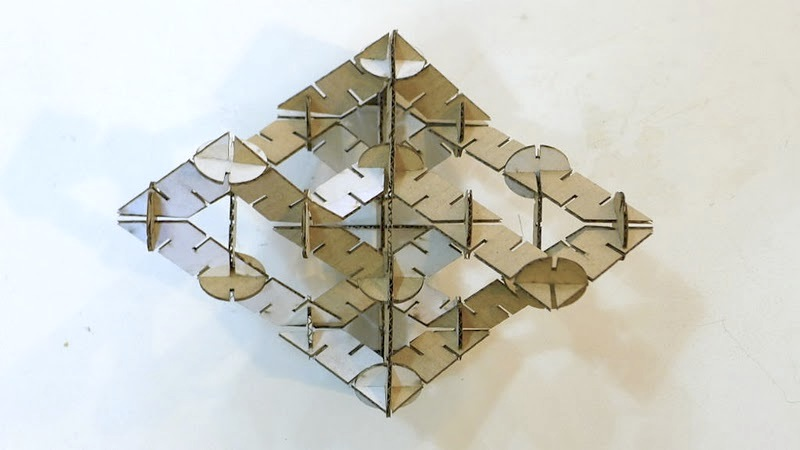 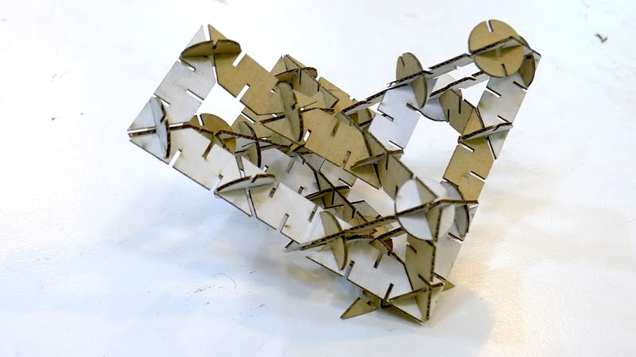 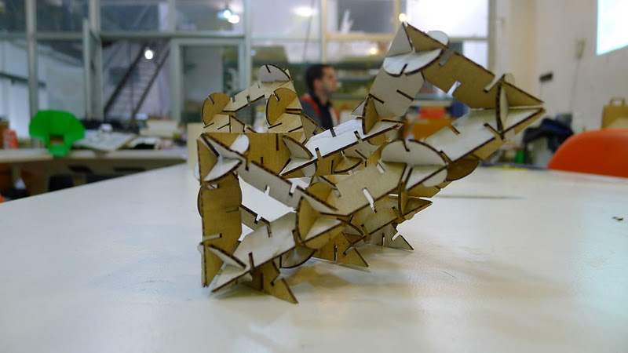 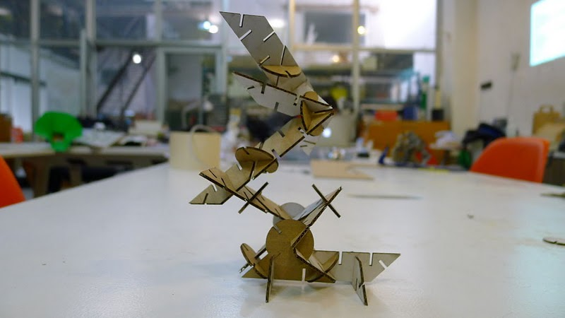